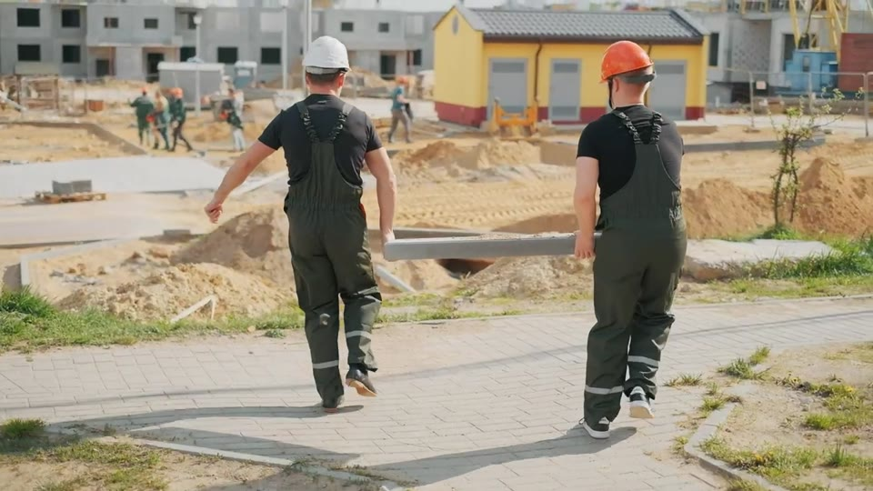

Nhận diện trang bị bảo hộ
Theo dõi mũ, áo phản quang, găng tay và giày bảo hộ. Xác nhận qua nhiều khung hình liên tục để hạn chế báo động nhất thời.
04 NHÓM PPEThêm một góc nhìn AI cho công trường của bạn.
Phát hiện vi phạm bảo hộ, lưu bằng chứng và hỗ trợ cảnh báo kịp thời — trên một nền tảng mã nguồn mở.

Biến dữ liệu hình ảnh thành góc nhìn hữu ích
cho người phụ trách an toàn.
Camera, bằng chứng và cảnh báo trong một không gian.
Bằng chứng ảnh giúp cán bộ an toàn rà soát từng sự kiện.
Ghi nhận · Đối chiếu · Xử lýGiao diện và khung nhận diện minh họa; không phải kết quả suy luận trên ảnh này.
Xây trên nền tảng
công nghệ mở, quen thuộc.
Một góc nhìn xuyên suốt. Từ điều vừa xuất hiện trong khung hình đến điều đội ngũ cần hành động.
Theo dõi mũ, áo phản quang, găng tay và giày bảo hộ. Xác nhận qua nhiều khung hình liên tục để hạn chế báo động nhất thời.
04 NHÓM PPEXem camera với khung nhận diện theo thời gian thực. Tổ chức nguồn hình theo công trường, không bỏ lỡ ngữ cảnh cần quan sát.
REALTIME OVERLAYLưu ảnh sự kiện, thời điểm và lịch sử tái diễn. Cán bộ an toàn có cơ sở rà soát, cập nhật trạng thái và theo dõi xử lý.
TỪ PHÁT HIỆN ĐẾN RÀ SOÁTGửi Telegram theo quy tắc, ngưỡng và thời gian chờ của công trường. Hỗ trợ gửi lời nhắc đã ghi âm đến trang loa công trường.
TELEGRAM & LOA CÔNG TRƯỜNGAgent kiểm tra sức khỏe hệ thống. Khi cấu hình Claude, hỗ trợ rà soát bằng chứng và trả lời câu hỏi, với nhật ký hành động rõ ràng.
HỖ TRỢ, KHÔNG THAY THẾ CON NGƯỜICông cụ đánh giá báo oan, bỏ sót và quét ngưỡng từng lớp giúp đội ngũ kiểm chứng model với dữ liệu tại công trường của mình.
ĐO LƯỜNG TRƯỚC KHI TIN TƯỞNGSử dụng webcam, nguồn RTSP hoặc video mẫu. Gắn camera với công trường để giữ đúng ngữ cảnh giám sát.
Model YOLOv8 nhận diện PPE, theo dõi đối tượng và xác nhận vi phạm khi điều kiện kéo dài đủ ngưỡng.
Dashboard ghi nhận sự kiện. Quy tắc cảnh báo hỗ trợ thông báo để người phụ trách rà soát và xử lý.
Luồng camera được phân tích bằng model local. Kiến trúc tách biệt AI Engine, Bridge và Dashboard giúp đội ngũ hiểu và tùy chỉnh từng phần.
Claude, Telegram và Roboflow sử dụng dịch vụ bên ngoài khi được cấu hình. Roboflow chỉ dùng đối chiếu ảnh tĩnh, không chạy trên từng frame camera.
Tìm hiểu kiến trúcVi phạm được lưu qua API · Prisma
Agent chạy riêng để hỗ trợ vận hành.
Khám phá mã nguồn, chuẩn bị model và chạy thử với video mẫu trước khi kết nối camera công trường.
MVP đang phát triển. Cần nghiệm thu với dữ liệu thực tế trước khi sử dụng trong vận hành.
# 1. Lấy mã nguồn
git clone https://github.com/nguyenbaquyen075/safesight-instructions.git
cd safesight-instructions
# 2. Hoàn tất các bước trong README:
# dependencies, .env, database, model
# 3. Khởi động môi trường dev
npm run devBốn nhóm PPE: mũ bảo hộ, áo phản quang, găng tay và giày bảo hộ. Kết quả phụ thuộc góc camera, ánh sáng, độ che khuất và model. AI hỗ trợ người giám sát, không bảo đảm phát hiện mọi vi phạm.
Không đối với luồng suy luận YOLOv8 local. Tuy nhiên, các tính năng tùy chọn như Claude rà soát ảnh, Telegram gửi bằng chứng và Roboflow đối chiếu ảnh tĩnh có sử dụng dịch vụ bên ngoài. Hãy đánh giá chính sách dữ liệu trước khi bật.
Chuẩn bị Node.js tương thích Next.js 16, môi trường Python với dependencies, cấu hình môi trường và cơ sở dữ liệu theo README. File ppe_multiclass.pt là bắt buộc; model găng, giày và pose là tùy chọn. Có thể dùng video mẫu thay camera thật.
Chưa. Đây là MVP đang phát triển, không phải hệ thống được chứng nhận an toàn. Cần kiểm thử báo oan, bỏ sót và cảnh báo tại công trường; giữ cán bộ an toàn trong vòng rà soát và quyết định.
Bắt đầu nhỏ. Kiểm chứng thực tế. Cải thiện từng ngày.